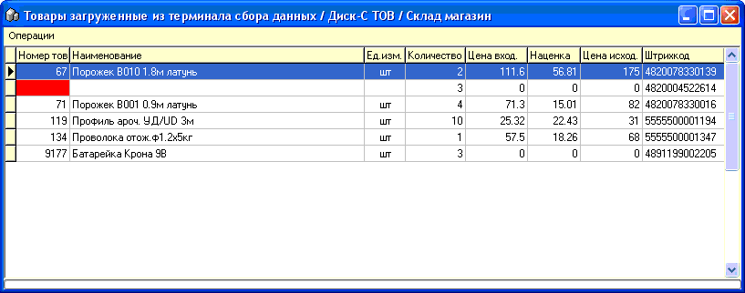

Модуль работы с
терминалом сбора данных должен быть включен в настройках программного
обеспечения, на соответствующей вкладке (см.раздел справки "Настройки" вкладка
"Терминал сбора данных"). Там же необходимо включить опцию работы с терминалом
в приходной накладной и убедиться, что терминал прошит правильной прошивкой
("Смешанный режим с добавлением новых товаров").
Предварительно в терминал могут быть загружены
товары указанного поставщика (через соответствующее меню в справочнике
"Контрагенты"), либо товары по определенной товарной группе/отделу/всему
магазину из документа "Переучет". Но это не обязательно, можно делать
сбор данных по приходу и "вслепую", просто удобнее при сканировании товаров
видеть, что это за товар, как он называется у нас в базе и т.д.
При выборе меню "Загрузить товары из терминала"
появляется отдельная форма, показанная ниже на рисунке. Рассмотрим по пунктам
работу с меню и загруженными данными.
Нажав "Загрузить товары из
терминала..." установите терминал в коммуникационно-зарядную подставку и
следуйте подсказкам появляющимся в программе.
После завершения загрузки появися сообщение
"Выгрузка прихода прошла успешно!" и в окне появятся товары, загруженные из
терминала.
В зависимости от того, насколько каждый товар
"знаком" программе учета, возможны 3 ситуации:
1. Товар есть в базе товаров, он ранее поступал
на данный склад предприятия, есть его последние цены (закупочная и
выходящая-розничная). Если на таком товаре нажать двойным кликом мышки (или
выбрав пункт меню "Перенести указанный товар в приходную накладную..."), то он
автоматически добавится в накладную, где впоследствии можно будет
отредактировать его цену. Также можно одновременно все такие товары перенести
в накладную нажав в меню окна пункт "Перенести все знакомые товары (с
ценами) в приходную накладную...".
2. Товар есть в базе данных, но он никогда не
приходовался или не перемещался на данный склад предприятия, отсутствуют его
цены (на верхнем рисунке это последний товар в списке, его цены равны 0). Если
на таком товаре нажать двойным кликом мышки, то появится обычное диалоговое
окно добавления товара в накладную, где нужно сразу указать его
закупочную/розничную цены.
3. Товара с таким
штрихкодом нет в справочнике вообще (на верхнем рисунке это второй товар с
красной меткой вместо кода товара). При двойном клике мышкой на
таком товаре откроется форма добавления нового товара и в окошке "Штрихкод"
сразу будет занесен новый штрихкод. Необходимо будет внести его наименование,
назначить его признаки и сохранить, далее нажав на нем Enter он добавится в
приходную накладную через диалоговое окно редактирования цен (Для правильной
работы данной возможности необходимо, чтобы в настройках: а)на вкладке
"Накладные" был установлен флажек "При отсутствии штрихкода товара в базе при
приходе открывать форму добавления товара" и б) на вкладке "Общие" был снят
флажек "При открытии справочника товаров не обновлять товары сразу, а ждать
поиска или обновления вручную").